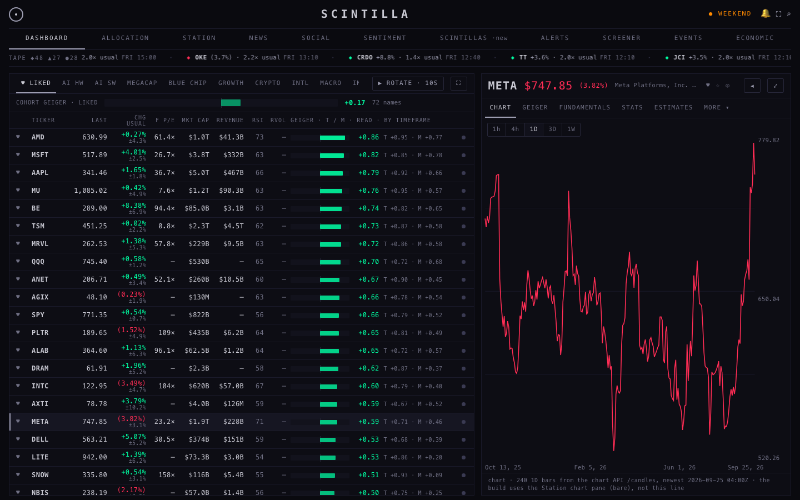
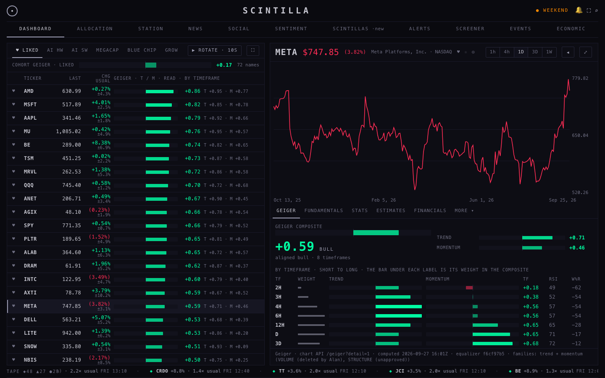
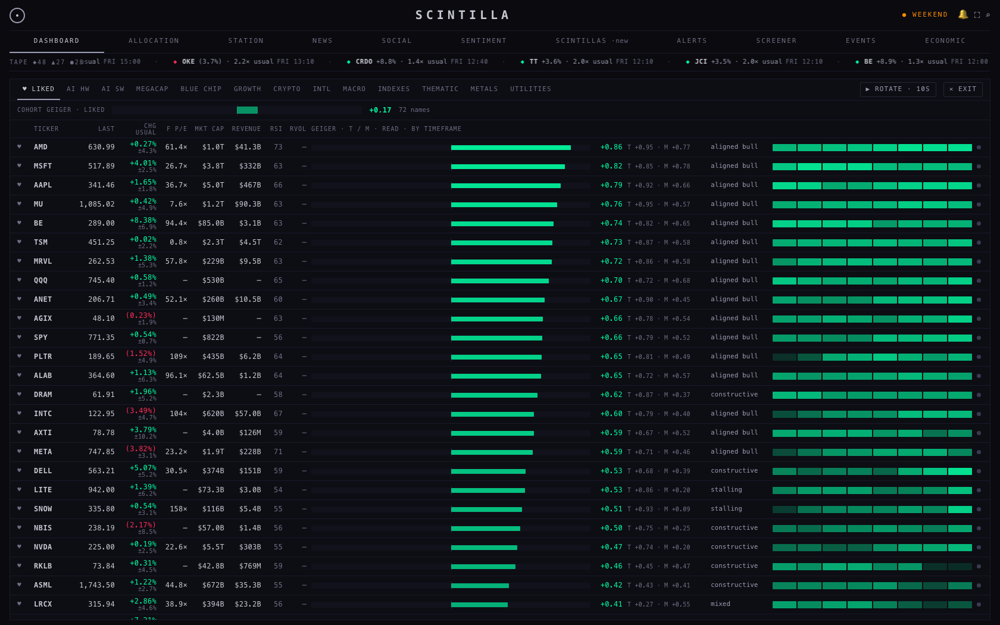
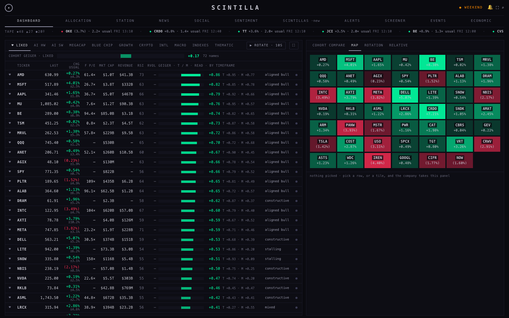
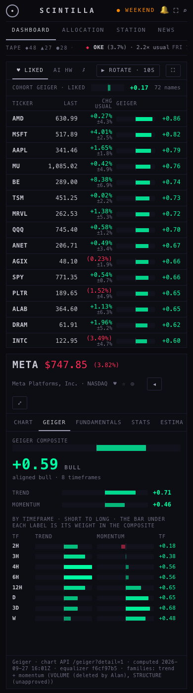
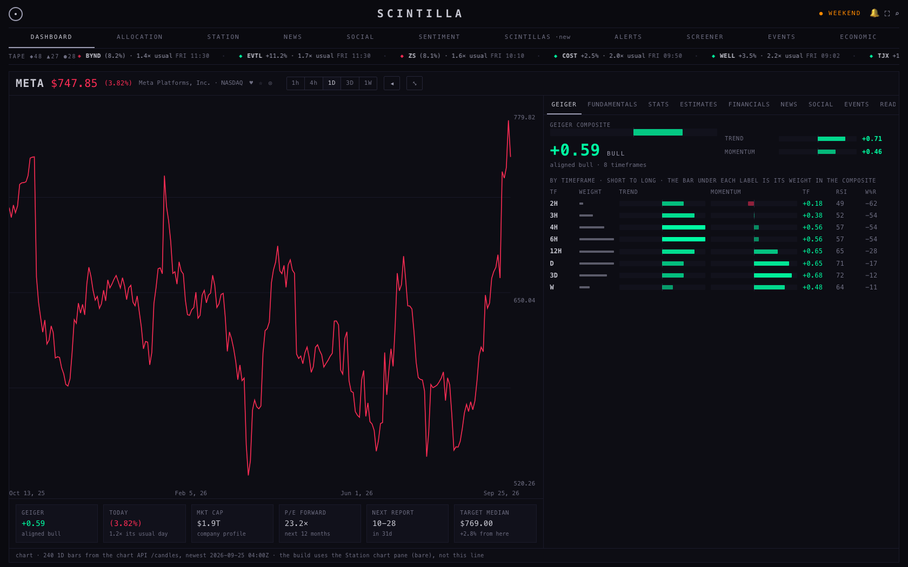
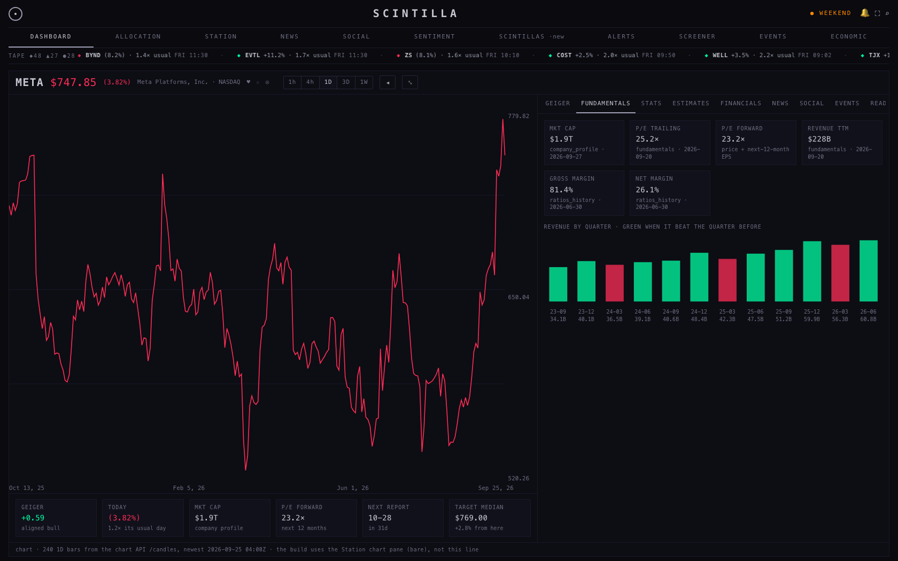
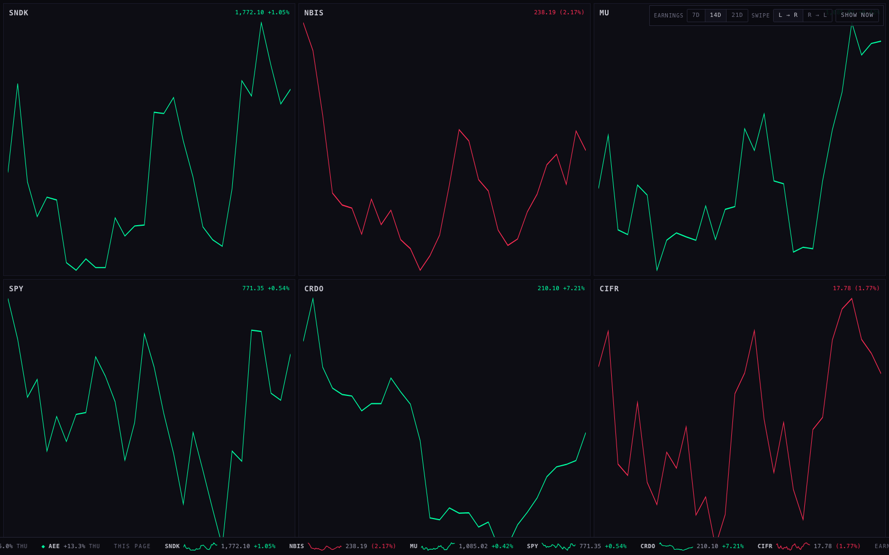

You said you love everything on the dashboard but not how it is laid out. This page does five things. It marks every point you raised on the live Hub at three screen sizes. It shows two layouts, A and B, running on live reads. It redesigns the company view and the GEIGER tab. It shows a tape for the Station. And it puts every visual proposal made so far on one evaluation board, so you can score them. It ends with one recommendation and what it would cost to build.
open layout A ↗open layout B ↗expanded company view ↗Station tape ↗evaluation board ↗
I opened scintillahub.ai headless on this MacBook (no window on your screen) at 1680, 1440 and 390 wide. I measured every element named below off the page itself, then drew the boxes where the page reported them. Each number on a box is one of your points. The master tabs normally tuck away until the mouse comes near; I showed them for these pictures. It is Sunday, so the market reads closed and today's scintillas strip is empty.
The empty company box shows "—".With nothing picked, the full-width company bar holds a dash and a status chip and nothing else. It takes a whole row of the screen at every size.
A green CLOSED duplicates the yellow CLOSED.Two chips say the same thing. The header chip is 10 px, the one in the company bar 9 px. On 25 Sep the second one was green; today both are orange. Keep the top-right one.
Where the selected company goes.The picked company is printed in the full-width bar at the top. The chart it describes starts about 200 px lower, on the right. On a phone the chart starts 708 px down an 844 px screen, so only its top edge shows until you scroll.
I see META everywhere.With META picked on the CHART tab the name is on screen five times. It appears in the company bar, in "station chart · META", in the chart's own ticker box, in the chart's price badge and in the board row. FUNDAMENTALS adds three more.
Chart timeframe selection two times.The Hub draws 1h to 1W. Under it the Station chart draws its own row of eleven timeframes plus clouds and TradingView, cut off at the right. The two rows disagree when you click the lower one. This is the Station pane's own bar, because the Hub embeds it without its "bare" mode (H2 finding 4).
The tabs are tiny.The company tabs and the cohort tabs are 7 px. The column headings are 6.5 px, the smallest text on the page. The master tabs above them are 10 px (Kimi's inventory, confirmed on the live page).
I don't know what AUTO and 60 seconds do.AUTO is an auto-rotate. It steps the company panel through the board's rows, one every 10 seconds, and the "10s ▾" chip cycles 5, 10, 20, 30 and 60 seconds. Nothing on screen says so.
The USUAL DAY column makes my Geiger thinner.The board splits its width into fixed shares. USUAL DAY has the largest share, 14 of 140. GEIGER has 10. At 1440 that is 69 px for USUAL DAY and 49 px for GEIGER.
In full screen there is empty space between the columns.Full screen stretches every column by the same factor. At 1680, USUAL DAY grows to 151 px and GEIGER to 108 px, but the bar inside GEIGER stays about 45 px. The rest is gap.
That whole tape area needs to be a tape area.Today six things move or list events: NEXT in the company bar, the TODAY'S SCINTILLAS strip, and four bottom tapes (MACRO, ALL, ECON, EARNINGS).
ALLOCATION and STATION are left-aligned and underlined.Those two tabs are links and the other nine are buttons. The page never removes the link styling, so they keep the browser's underline and left alignment. I measured text-decoration: underline and text-align: start on the live page.
The OUTLIER OF THE DAY thing: another master tab."Outlier of the day" is one kind of scintilla. Today it only lives in the one-line strip, one at a time.
Fundamentals: disproportions like crazy on font sizes and colours.In full screen the values are 24 px next to 11 px notes, and META is printed three more times, one of them a ticker box. The market cap reads 1.43T there but $1.9T on the board. The two read different stored rows: the fundamentals row at the 20 Sep price, and the company profile.
This whole Geiger section is disgusting; I like the composite bar at the top left.The expanded GEIGER tab has the composite bar, which is marked in green: keep it. It also has an arc, RSI and Williams panels that are mostly empty space, an "unavailable" MACD card, a volume gauge "awaiting rvol feed", and a dotted ladder box.
Both are working pages. They read the same live sources the Hub reads: prices, candles and the Geiger from the chart API, and lists, usual day, profiles, fundamentals, scintillas, earnings and the economic calendar from the Hub's own tables. Click a row to pick a name, try the tabs, EXPAND, the board's full screen and ROTATE. They share everything except where the company goes.
Today's grid stays: board left (60), panel right (40). The company bar is gone. The picked company becomes the first line of the right panel, directly above its chart. When nothing is picked, the right panel shows COHORT COMPARE / MAP / ROTATION / RELATIVE as today, so there is never an empty box. The tape sits under the master tabs.
When a name is picked, the board narrows to its core columns: ticker, last, change with usual day, and a wide Geiger. The company gets a stage: board 44, stage 56. The chart is always on top, with the timeframe row on the company line, and the tabs are under the chart. With nothing picked, B looks like A. The tape sits at the bottom, where the bottom tapes are now.


| # | today | in A and B |
|---|---|---|
| 1 · 2 | an empty full-width bar and a second CLOSED | no company bar. One status, top right, in the amber you chose. The chip reads the market's own state (today: WEEKEND). |
| 3 · 4 | the company far from its chart; META five times | the company is the chart's own heading. The name is printed once there and once as the lit board row. The mockup chart has no badge or ticker box. The build needs the Station pane in bare mode (H2 step A) to lose them. |
| 5 | two timeframe rows | one row. In A it sits on the chart's top-left corner. In B and in the expanded view it sits on the company line. |
| 6 | 7 px tabs, 6.5 px headings | every tab row is 11 px, one style. Headings are 10 px. The collapsed panel shows five tabs and a MORE; expanded shows all nine. |
| 7 | AUTO and "10s ▾" | ▶ ROTATE · 10s in the board's own bar, because it steps through the board. Hovering it says what it does. |
| 8 · 9 | fixed shares; Geiger thin, gaps in full screen | every number column gets a fixed width that fits its number. The Geiger takes whatever is left. USUAL DAY folds under CHG as a small second line, so nothing is lost. TREND, MOM and READ fold into the Geiger cell, which shows more as it widens. First the bar and value, then T / M, then READ, then the eight timeframes as a strip. In full screen the other columns stay put and the Geiger takes all the room. |
| 10 | six tape things | one tape: ◆ scintillas, ▲ earnings in the next 21 days, ● US releases of medium or high impact in the next 3 days, one lane, in time order. It folds to a 4 px line after 12 s without the mouse near it and comes back when the mouse comes near or a new item lands. Picking a name does not rebuild it; that name's items get a thin box. MACRO and ALL are price tapes, not events: see decision 2. |
| 11 | two tabs underlined, left | every master tab is one element, centred, with no underline. |
| 12 | outliers only in the strip | a SCINTILLAS master tab: the last sessions' scintillas as a list with the rule that fired. Click a name to open it on the dashboard. |
| 13 · 14 | Fundamentals and Geiger tabs | section 3. |
Widths in pixels, read off the pages at capture time. On the live Hub at 1440, USUAL DAY is 69 and GEIGER is 49.
loading the measurements…



Kimi counted 41 font sizes, 29 letter-spacings and 48 text colours on the Hub. The mockups use six sizes, three weights, three spacings, four greys, and colour only for direction and the market status.
| token | size | takes over (Kimi) | used for |
|---|---|---|---|
| micro | 10 px | 5 · 6 · 6.5 · 7 · 7.5 | column headings, captions, source lines |
| label | 11 px | 8 · 8.5 · 9 · 9.5 | every tab row, tape items, small labels |
| body | 12 px | 10 · 10.5 · 11 · 11.5 | board rows, readouts |
| title | 14 px | 12 · 12.5 · 13 · 14 · 15 | tile values, section titles |
| big | 20 px | 17 · 18 · 19 · 20 · 22 | the picked name and its price, the wordmark |
| display | 30 px | 24 · 26 · 30 · 34 | the Geiger composite value |
Two changes to Kimi's numbers. His two smallest steps, 7 and 9 px, are raised to 10 and 11, because the Hub's rule is body text of at least 11 px and you called the tabs tiny. His lightest grey, #F2F2F8, is replaced by #C8C8D2, because no grey may go above 210. The greys are #C8C8D2, #9C9CB0, #6E6E82 and #3A3A52. Up is #00FFA3, down is #FF2D55, and the status is #FF8A00.
You asked what goes into the expanded view now that there is room, and said that expanded should always show the chart together with the other information and the tabs.
A: the company line, then five tabs and MORE, then the tab's content. CHART is one of the tabs. B: the company line, then the chart, always, then the tabs and their content under it. B is the "chart always" idea in the collapsed view too.
The board steps aside. The chart is always on the left, 60 %. Under it is a row of six numbers you want beside a chart: the Geiger and its read, today's move against its usual day, market cap, forward P/E, the next report, and the median target. On the right, 40 %, are the nine tabs. The timeframe row sits on the company line.


Kept: the composite bar from the top left, as the first thing in the tab, with its value large and its lean. Trend and momentum sit beside it in the same bar. Then: the eight timeframes, 2H to W, one row each. Each row has the weight you gave it, trend and momentum as the same signed bar, the timeframe's composite, RSI and Williams. Every bar on the tab is one idiom: centre is zero, green right, red left, full is ±1. Dropped: the arc, the dotted ladder box, the MACD card, which says unavailable, and the volume gauge. You deleted the volume family, so it can only ever say "awaiting".
F1's three tabs were candidates. This is closest to F1's tab A, the ladder, redrawn around the bar you like. Tab B, the Geiger's own history line, would fit as a second block under the ladder. But the stored history stops on 20 Aug, so I left it out rather than show a stale line. Tab C, the trend × momentum plane, is on the evaluation board to score.

This is one 34 px strip, like the iOS Stocks widget. First come the page's six names, each with a 30-day sparkline, last price and day change, coloured by the day. Then come earnings in the next N days, which you can set to 7, 14 or 21. Then the latest scintillas. It swipes left to right as you described, with a switch to reverse it, and pauses under the mouse. It hides itself 5 s after the mouse leaves the bottom edge. It comes back when the mouse comes near the bottom or a new scintilla lands. The names are the deck's current page, six a page, as the Station's cohort pages show them. Prices refresh once a minute, the tape every two minutes and sparklines every five.
What it costs: while it shows and swipes, the strip adds about 2 CPU-seconds a minute above an empty tab. That is the one continuous animation. Once hidden it pauses and costs nothing measurable. For scale, the live Hub dashboard measured 9.2 CPU-seconds a minute on the same machine.
loading the CPU measurements…
You asked for a way to evaluate every visual proposal for a serious revamp. The board is here. It has one card per proposal: Geiger in motion A, B and C, the tabs A, B and C, the sentiment feed, context lens rounds 2 and 3, the knockout cards, and this lane's layouts, company view, Geiger tab and Station tape. Each card has a picture of it running, what it is for, where it would live, and its measured cost. Under each card you pick keep, change or drop and write one line. Copy my scores turns your picks into text to paste to the coordinator. Your picks stay in your browser until you copy them.
What the costs say: the three Geiger-in-motion players are the expensive ones, 6.9 to 11.3 CPU-seconds a minute while they play. That is as much as or more than the whole live dashboard (9.2). Every other proposal settles near the empty-tab floor of 0.4, and none goes above 1.1. The layouts A and B, the expanded view and the Geiger tab measured 0.4 to 0.9. The same page gave 0.93 and then 0.41 on two runs, so read differences under half a second as noise.
| lane | what | days | depends on |
|---|---|---|---|
| Hub 1 | master tabs as one element, and the six sizes and four greys across the Hub, chrome first, then the board, then the rooms | 1.5 | nothing |
| Hub 2 | layout A: the company line in the panel, no company bar, one status, ROTATE, the column budget and the Geiger cell that widens, SCINTILLAS master tab | 2 | Hub 1 for the sizes |
| Hub 3 | the one tape: NEXT, the scintillas strip, ECON and EARNINGS merged, auto-hide | 1.5 | nothing |
| Station 1 | the chart pane's bare mode for a cross-origin parent (H2 step A: no 5.5 s wait, its own quote), so the Hub can drop the pane's own bar, badge and ticker box | 0.5 | nothing |
| Hub 4 | the expanded company view (chart and number row and tabs), the GEIGER tab, the FUNDAMENTALS tab on one scale | 2 | Station 1 deployed |
| Station 2 | the Station tape on every page, fed by the deck's current page | 1.5 | Hub 3's reads, reused |
| total | 9 | about 4 calendar days with three lanes at once |
One more cost to know about. The widening Geiger cell's eight-timeframe strip needs each name's per-timeframe numbers. Today that means the chart API's detail read. For 72 names that is about 420 KB in three calls, which is fine once a minute but heavy for a phone. A small chart API change, adding the eight timeframe composites to the plain Geiger read, would remove it.